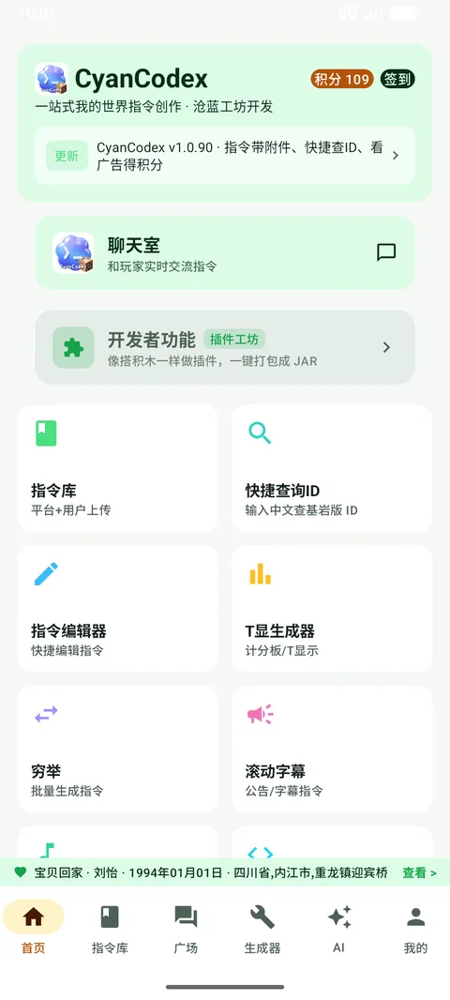
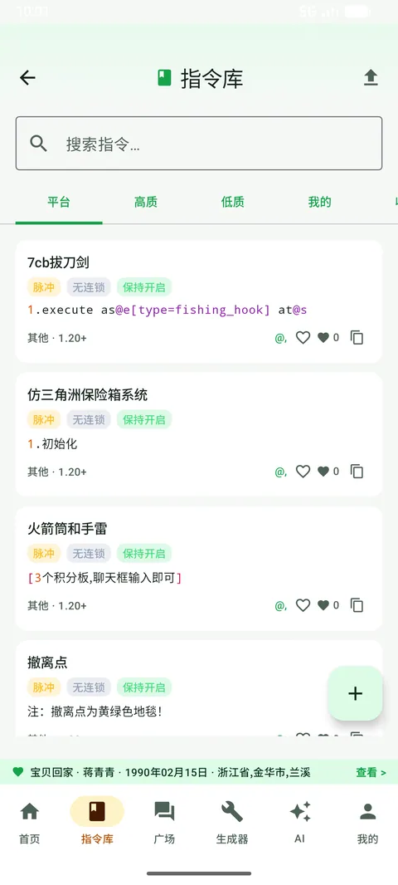
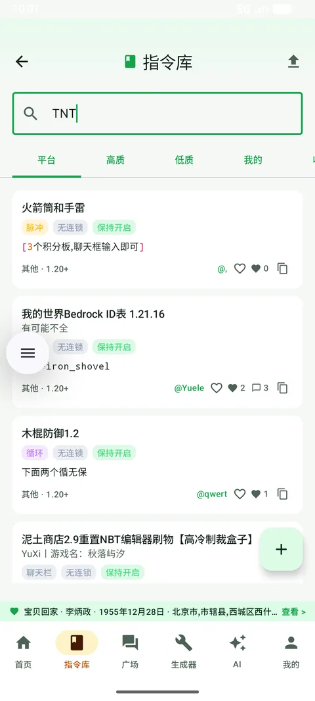
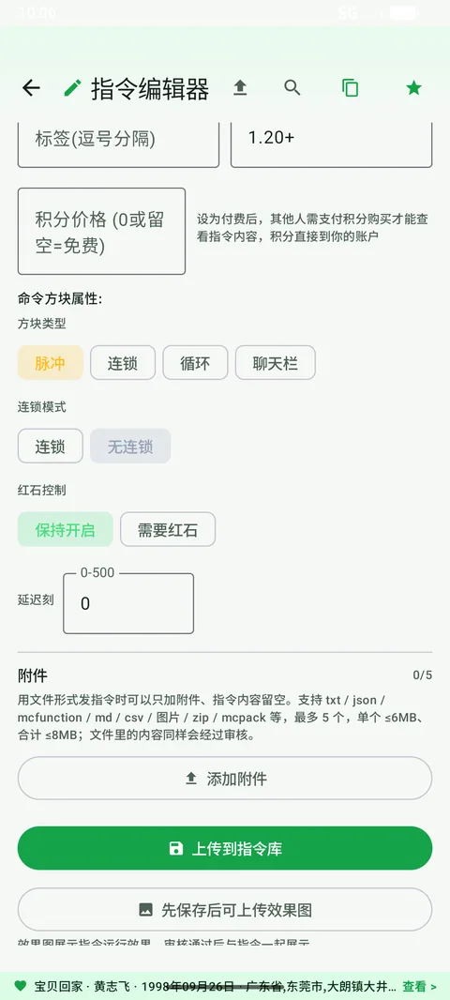
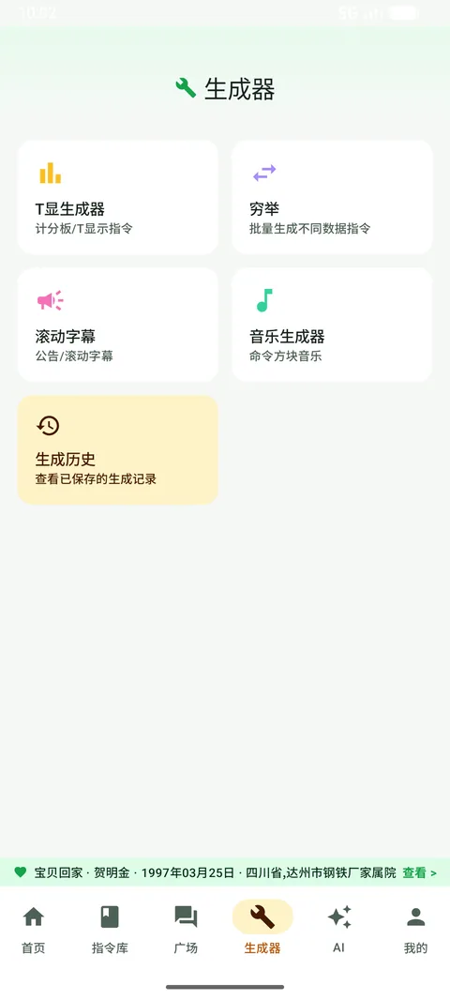
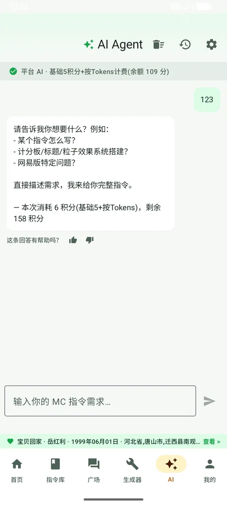
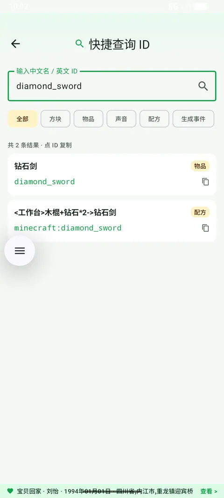
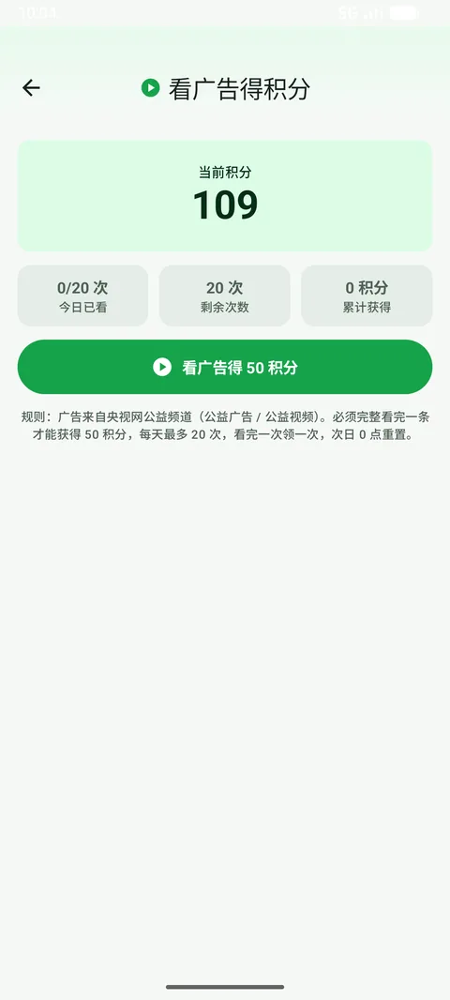
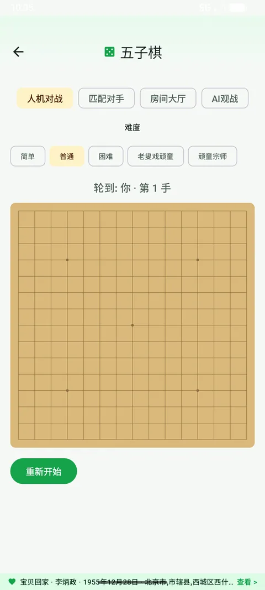
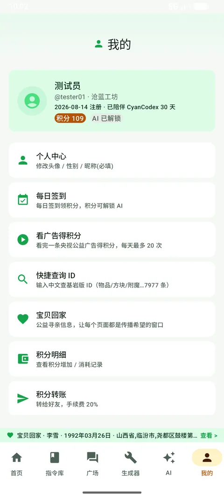

从安装到每个功能怎么用，都写在这里了。截图全部来自真实运行界面（Android 端）。
如果只想用生成器、不想要账号和联网功能，可以装 CyanCodex 离线版： 下载离线版 APK（v1.0.1 · 2.02 MB）。
Cyan工具箱是另一个独立 App，只放通用小工具： 下载工具箱 APK（v1.0.5 · 2.15 MB）。
首页就是总入口：顶部显示积分与签到，中间是公告横幅，下面是各个功能模块。

tnt）即可检索；命中的关键词会高亮。

@p/~/^ 等参数，还有命令补全提示。/op 某某 会被直接驳回），所以不用担心有人用文件绕过审核。
titleraw 指令。note.* 音效）。

copper_nugget）→ 直接出结果。一共 7977 条基岩版参考数据，找不到的可以换个说法，或者直接用 AI 问。

页面：我的 → 每日签到 / 看广告得积分 / 积分明细 / 积分转账。



| 你的游戏版本 | 下载哪个 | 额外要求 |
|---|---|---|
| 1.20.1 – 1.21.8 | 1.20.1–1.21.8 通用包（一个包覆盖中间所有版本） | Fabric Loader + Fabric API（对应版本） |
| 26.2（最新版） | 26.2 包 | 需要 Java 25；Fabric API 26.2 版 |
下载地址就在官网下载区（Java 版 · 模组 / Java 版 · 26.2）。
.minecraft/mods 文件夹。mods，再下载本模组的 jar 丢进同一个文件夹。0.92.12+1.20.1；1.21.8 用 0.136.1+1.21.8；26.2 用 0.160.0+26.2。进游戏后按 K 打开 / 关闭 CyanCodex 界面。顶部页签：
/title @a title {"text":...}、/playsound minecraft:block.note_block.harp …），和手机端基岩版语法不同，这点别搞混。| 操作 | 说明 |
|---|---|
| K | 打开 / 关闭界面 |
| 点列表行 | 1.20.1~1.21.8 版：选中该行；26.2 版：直接复制 |
| 复制 | 复制到剪贴板，切回游戏 Ctrl + V 粘进聊天框 |
| 执行 | 以你的身份直接执行该指令（需要 OP 权限） |
| 收藏 / 刷新 / ◀ ▶ | 收藏当前行 / 重新拉取 / 翻屏 |
https://app.blueworkshop.top）和 API 密钥 → 点「保存并测试」。今日剩余 xxxx / 2000 就说明通了。配置会写到 .minecraft/config/cyancodex.json（密钥只存在你本机）。
mods 里的 jar 即可，游戏本体不受影响（模组不修改游戏文件、不联机注入）。.minecraft/logs/latest.log 有没有报错。这是安卓的安全限制：允许一次「安装未知应用」权限就行。下载的 APK 请从官网或 App 内更新获取，别用第三方渠道的包。
离线版只有生成器，不联网、不登录、不用账号，安装包更小（下载）；完整版多了指令库、AI 助手、广场、账号签到、插件、广告拦截、网络测速等功能。只想生成指令就装离线版，想要指令库和 AI 就装完整版；两个包名不同，也可以都装上。
工具箱是通用小工具合集（下载）：JSON / Base64 / 哈希、进制 / 时间戳 / 颜色 / 单位换算、随机密码 / 二维码、设备信息 / DNS / 端口检测。不用单独注册——用你的沧蓝工坊账号登录即可（和主 App、官网同一个账号），登录后能看积分、签到；不登录也能用全部工具。
每日签到（+20 起，连签更多）、看公益广告（每次 +50，每天最多 20 次）、活动奖励、好友转账（手续费 20%）。积分用于 AI 按量计费等场景。
工作日有 AI 自动审核，通常几分钟内就有结果；被驳回会写明原因，改完重新提交即可。周末的 AI 自动审核需要开发者邮件授权后才开启。
那是作者设置的「付费指令」：支付对应积分后即可查看。积分直接给作者，平台不收。
语法不同：手机端是基岩版（titleraw / note.harp / 计分板 dummy），Java 版模组输出的是 Java 语法（title / minecraft:block.note_block.*）。两边都会按各自版本生成，复制时注意别混用。
在。账号、积分、上传的指令、聊天记录都在服务器上，登录同一个账号即可；只有「快捷指令」等本机设置需要重新加。
没找到答案？App 里「我的 → 意见申诉」直接提，或加 QQ 群 1065025874。
也可以 下载这份教程的 Markdown 版本 存到本地。
⑨ 聊天室、好友与广场